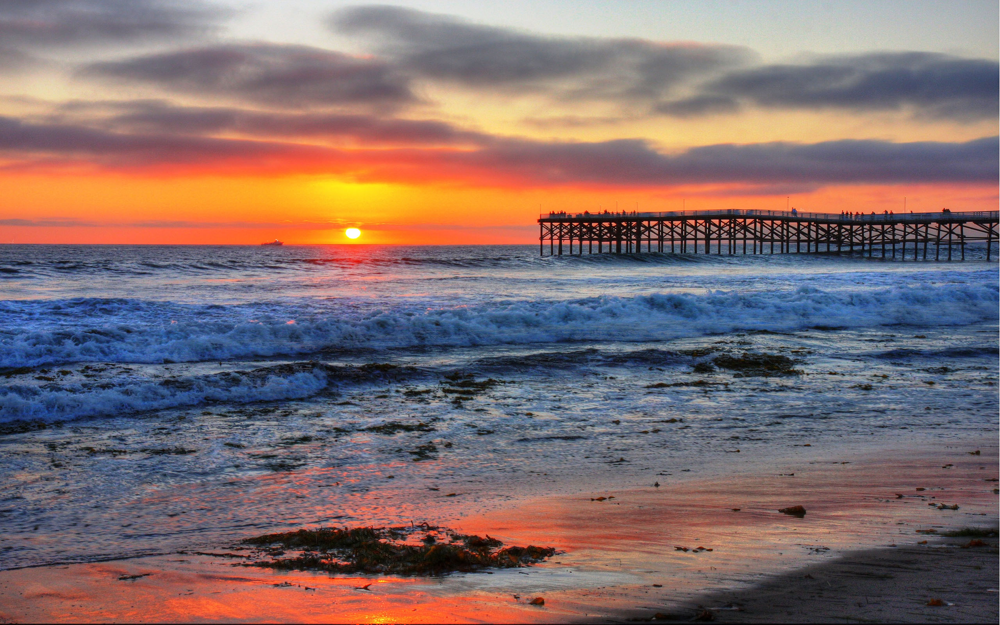

The University of San Diego
My alma mater, and one of America's most beautiful college campuses.

Pacific Beach
San Diego has great beaches, and Pacific Beach stands out for its vibrant nightlife.
Balboa Park
Home to several museums, gardens, and the world-famous San Diego Zoo, Balboa Park is a must-visit for anyone looking to see the very best of San Diego.
Hillcrest
There's never a shortage of things to do in this diverse neighborhood.
Old Town
Visiting this historical park is a great way to experience some of the history and culture of San Diego, as well as its delicious food.
Gaslamp Quarter
Located in downtown San Diego, the Gaslamp Quarter is perfect for a night out in the city.
Fashion Valley Mall
For when you just want to get some shopping done, you can't go wrong with Fashion Valley.
San Diego Central Library
A fairly new addition to San Diego, this library is amazing.